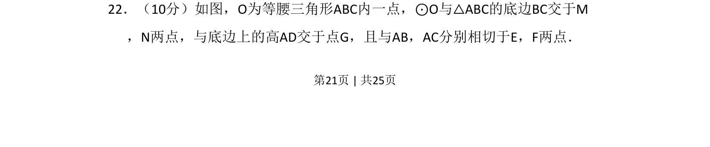
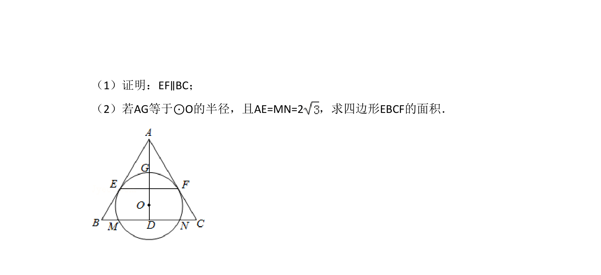
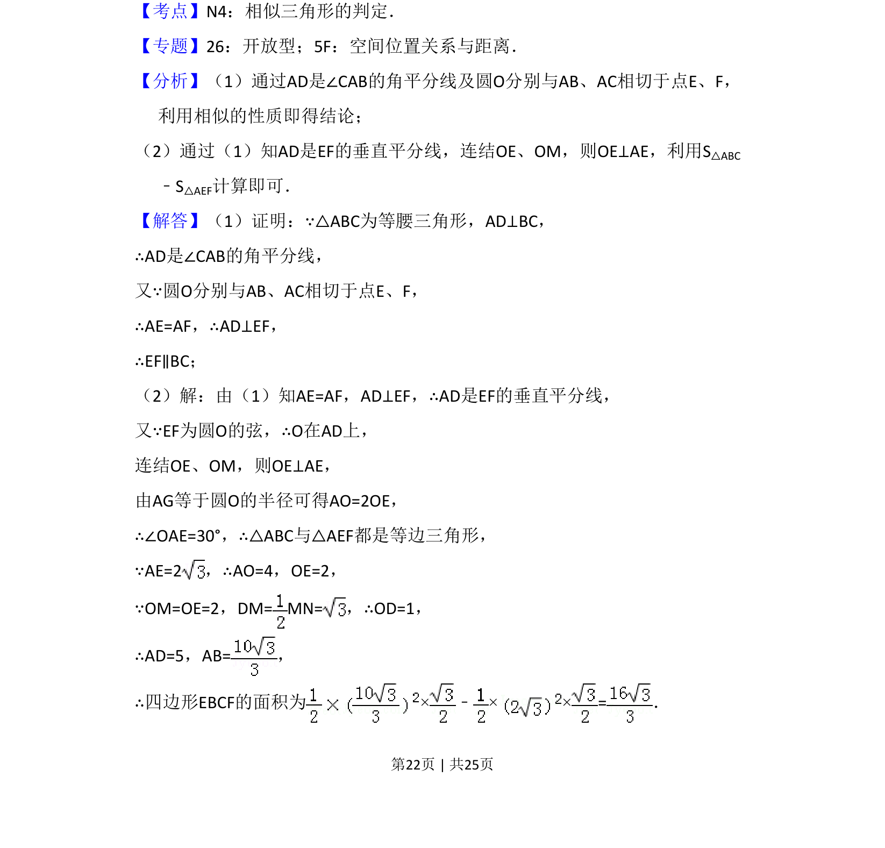
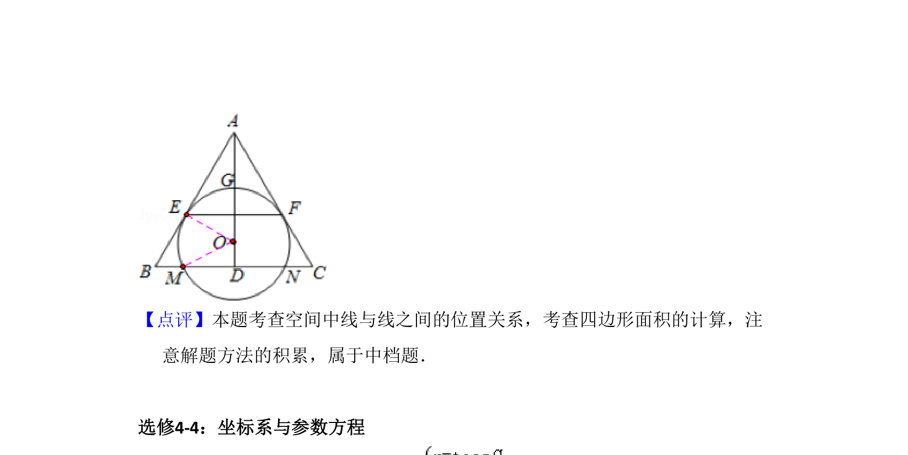

考点：等腰三角形 圆的切线 弦心距 几何综合
等腰三角形
圆的切线
弦心距
几何综合


几何综合题，考查等腰三角形性质、圆的切线与弦的关系。


📄 原 PDF 第 21 页：素材/真题/吉林/2008-2024·（吉林）数学高考真题/2015年高考数学试卷（理）（新课标Ⅱ）（解析卷）.pdf
素材/真题/吉林/2008-2024·（吉林）数学高考真题/2015年高考数学试卷（理）（新课标Ⅱ）（解析卷）.pdf